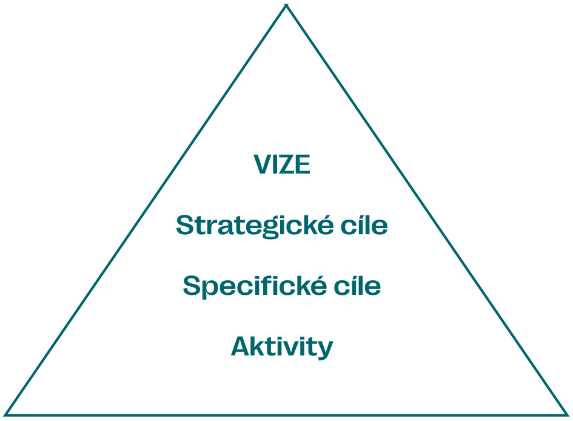
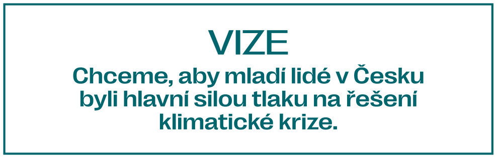
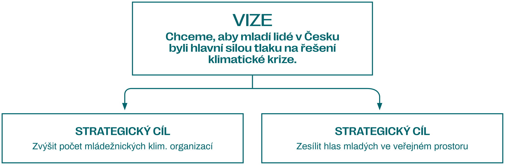
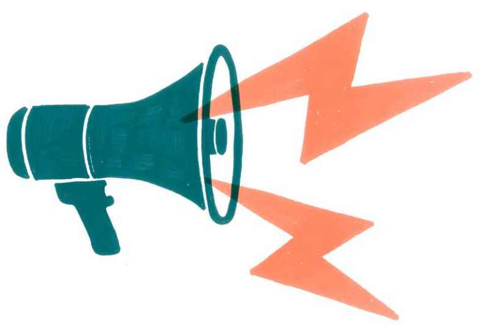

Jak na vlastní strategii
V této kapitole se dočtete více o tom, proč o strategii vůbec přemýšlet a jak se do ní pustit krok po kroku. Pomůže vám určit, jakým směrem se vydat a jak postupovat, když chcete na výzkum Klimavize navázat – ať už jste místní buňka, expertní organizace, nebo masové hnutí.
Proč vůbec mít strategii?
Společný cíl, o který celé klimatické hnutí usiluje, je obrovský. Klimatická krize se propisuje do všech oblastí lidské společnosti i fungování světa a není v moci jedné organizace, aby všechny příčiny a dopady jednoduše „vyřešila“. Proto klimatické hnutí své síly rozkládá do různých směrů a témat, aby se změny neděly jen v několika málo oblastech, ale probíhaly zároveň a na různých úrovních.
Když se řekne slovo strategie, možná si představíte dlouhý dokument, který nějaké organizace nebo státy tvořily nekonečně dlouho. O to však nejde. Strategii by měly mít jak velké organizace, tak i ty malé. Protože důležitější, než kolik času na tvorbě strategie strávíte, je to, k čemu vám v důsledku slouží. Strategie by vás měla vést v tom, jakých cílů chcete dosahovat a jak to uděláte. A to platí jak pro stát a velká hnutí, tak i pro uskupení o pár lidech.
Jak poznáte, že by se vám strategie skutečně hodila? Ve zkratce: bez strategie budete nejspíš tápat v tom, co a jak dělat. Projevovat se to může v celé řadě situací:
- Doufáte, že na další setkání přijde někdo s dobrým nápadem, který budete moci konečně zrealizovat.
- Nevíte, do jakého tématu se pustit. Je jich hrozně moc a všechny jsou extrémně důležité.
- Řešíte, jestli jít raději lobbovat za politiky, udělat přímou akci, uspořádat protest nebo sepsat online petici. A nevíte, čím začít.
- O každé příležitosti dlouhé hodiny diskutujete, jestli se jí věnovat, nebo ne.
- Chcete klimatickou spravedlnost, ale nejste si jistí, jestli k ní nějak přispíváte.
Výčet by mohl být samozřejmě ještě delší – podle toho, v jak velkém kolektivu působíte, jak se organizujete i co řešíte za témata. Hlavní důvody, proč strategii mít a řídit se jí, lze shrnout v několika bodech:
- Sladíte si cíle i záměry – kolektivně rozumíte tomu, za čím jdete, ale také víte, proč jsou pro vás vytyčené body důležité.
- Podpoříte rozhodování – v nejasných situacích se opřete o principy, zásady a techniky, na kterých jste se společně shodli.
- Usnadníte si plánování – dokážete si říct, co je pro vás důležité, čemu se věnovat přednostně, na co se zaměřit i jak rozložit vlastní síly.
- Posílíte význam vlastního kolektivu – ujasníte si, jakou máte roli uvnitř ekologického hnutí i jaký dopad mají vaše kroky na společnost.
Jak si udělat strategii – krok za krokem
Rozhodli jste se, že vám dává smysl vytvořit si strategii i pro svůj kolektiv? Skvělé! Pojďme se tedy podívat, jak taková tvorba strategie s využitím výzkumu Klimavize může vypadat. V následující podkapitole nabízíme jeden z možných postupů, který můžete v kolektivu použít1. Tento postup je založen na strategické pyramidě – nástroji, jenž vám pomůže definovat si vizi, strategické i specifické cíle a konkrétní aktivity.
Krok 0: Co budete potřebovat
Než se pustíte do samotné tvorby strategie, připravte si všechno, co budete potřebovat:
- Dostatek času. Strategie potřebuje péči, a pokud chcete, aby vám dobře sloužila, nezformulujete ji za dvě hodiny. Čas budete potřebovat na přípravu i samotnou tvorbu. Dobrá příprava vám může zabrat klidně i několik týdnů, během kterých budete sbírat podklady. Nebojte se rozložit síly do týmu, aby šel sběr informací rychleji. Pomoci vám v tom může právě Klimavize, v rámci níž už jsme některé podklady sebrali. Čím bude příprava lepší, tím více bude vaše strategie opřená o fakta, nikoli o dojmy. Čas přípravy se odvíjí také od velikosti vašeho kolektivu – skupina pěti lidí potřebuje strategii jiné velikosti než třicetičlenný tým. Pro samotnou tvorbu strategie si vyhraďte několik časových bloků za sebou (např. celý jeden den po čtyři víkendy za sebou). Důležité je nechat mezi jednotlivými pracovními bloky časový rozestup (tedy neplánovat čtyři dny v kuse), abyste při tvorbě strategie měli prostor na přemýšlení a nedělali důležitá rozhodování ve stresu.
- Facilitátora či facilitátorku. Tvorba strategie je náročná činnost, a proto je dobré, když se na ni bude moci soustředit celý váš kolektiv. Zkušený facilitátor či facilitátorka vám může pomoci vyhnout se slepým uličkám, nepálit energii na věcech, které nejsou důležité, a provést vás celým procesem včetně složitých diskuzí, jež mohou při tvorbě strategie vyvstat. Kontakty na vybrané facilitátory a facilitátorky najdete na konci kapitoly.
- Podklady a Klimavizi. Abyste si mohli naplánovat vlastní strategii, potřebujete strategické podklady – vlastní data, dokumenty a další zdroje informací2, které vám pomohou odpovědět na důležité otázky, třeba na co má smysl se soustředit a jaké příležitosti přitom můžete vytěžit. Jednu takovou publikaci právě čtete, ale nebojte se zabrousit i do jiných zdrojů. Pomůže vám také vlastní průzkum – ostatních organizací, problémů lidí nebo postojů a cílů vašich spojenců.
- Prostor a nástroje. Zvolte si místo, kam budete zaznamenávat své myšlenky. Můžete použít velký papír a lepicí kartičky (post-it), případně některou z interaktivních nástěnek3. V případě, že se chcete sejít všichni fyzicky, najděte si vhodný prostor, kde budete mít klid na práci i zázemí – možná máte k dispozici nějaké kanceláře nebo se můžete uchýlit do kavárny v okolí. Plánovat lze i online, pokud se z nějakého důvodu nemůžete sejít osobně.
- Strategickou pyramidu. Ať už ji máte v hlavě, nebo na papíře, pomůže vám uvědomit si, na jaké strategické úrovni se pohybujete a jestli například nezaměňujete cíle s nástroji nebo neformulujete aktivity před definováním svých cílů.

Krok 1: Co už máte za sebou
Po přípravné fázi se pusťte do reflexe. Pokud nejste nově vznikající kolektiv, pravděpodobně už máte nějaké aktivity za sebou. V prvním kroku tedy začněte se zhodnocením těchto aktivit a zamyslete se, jak vás posunuly směrem k vašim cílům.
Využít můžete například metodu Start – Stop – Continue4. Nejdříve si zreflektujte aktivity, které jste dělali v poslední době, třeba za poslední rok. Můžete se ptát: Co se nám podařilo? Co fungovalo? Z čeho máme radost? Nebo také: Co nefungovalo? Co drhlo? Co nás štvalo? Pohybujte se na úrovni témat, která řešíte, i na úrovni toho, jak se organizujete.
Následně aktivity rozdělte do tří kategorií. Do kategorie „Start“ umístěte nápady, které by váš kolektiv měl realizovat, ale ještě jste se do nich z různých důvodů nepustili. Do kategorie „Stop“ zahrňte nápady, které nenesou žádoucí výsledky nebo je prostě dělat nechcete – třeba zbytečná byrokracie. Do kategorie „Continue“ zařaďte aktivity, u nichž víte, že jsou užitečné a chcete s nimi pokračovat, nebo u kterých si ještě nejste jisti, a tím pádem je potřebujete teprve vyhodnotit.
Při reflexi vlastních kroků se neomezujte pouze na pohled zevnitř svého kolektivu. V druhé možné aktivitě si ověřte, jak vás vnímá okolí. Ptejte se na otázky typu:
- Co užitečného jsme udělali pro svět okolo nás?
- Komu jsme pomohli a v čem?
- Jak nás vnímá okolí? Zajímá naše úsilí někoho?
Důležité je, abyste si na tyto otázky neodpovídali sami – chcete získat obrázek o vlastní existenci, a proto vám s tím nejlépe pomůžou vaši spojenci, partneři a partnerky, klimatické hnutí či lidé, za které se stavíte. Nemusí jít o složitý průzkum. Často stačí vzít telefon, dotazník a chtít poslouchat, jak vás okolí vnímá.
Díky zhodnocení aktivit uvnitř kolektivu i pohledu zvnějšku získáte vstupy týkající se toho, čemu se už věnovat nechcete, čemu ano a co potřebujete více prozkoumat a pochopit. Je to základ, od kterého se vaše strategie odpíchne.
Krok 2: Analýza situace a tvorba vlastní vize
Jakmile zhodnotíte své dosavadní působení, můžete se začít rozmýšlet, čemu se věnovat do budoucna. V tomto bodě vám pomůže provést analýzu situace kolem vás a kontextu problému, který chcete řešit, abyste si na základě získaných informací mohli definovat vlastní vizi.
Používejte podklady a materiály, jež se týkají vašeho prostředí a situace, kterou se plánujete zabývat – budou se vám hodit různé výzkumy a články, ale možná také vlastní zkušenosti a nápady vašich aktuálních spojenců. Všechny materiály pečlivě studujte a pokládejte si následující otázky:
- Čeho chceme dosáhnout? Co chceme ovlivnit? Jaký bude mít naše činnost dopad?
- Pro koho tady jsme? Co lidé potřebují, aby se změnilo? Jak jim můžeme pomoci?
- Jaký je aktuální stav? Co je v daném tématu nejdůležitější? Co se o něm ví a píše? Jaké příležitosti a hrozby jsou s ním spojené?
- Kdo se tématu věnuje? S kým se můžeme spojit? Na jakou práci navázat? Na koho bychom si měli dát pozor?
Při hledání odpovědí i otázek v této fázi vám pomůže právě Klimavize. Najdete v ní společenské dynamiky, jež jsou vzájemně propojené a ukazují komplexitu problémů spojených s klimatickou krizí. Jednotlivé kapitoly vám představí oblasti, které je potřeba při vymýšlení vlastní strategie brát v potaz, aby změna, o niž usilujete, měla potenciál měnit struktury a celý systém. Klimavize ukazuje velkou řadu pákových bodů, na které se vyplatí působit, pokud chcete dělat velké změny.
V této fázi vám také mohou pomoci metody, jako jsou například analýza moci5 nebo spektrum spojenců6. Umožní vám pochopit, v jakém poli aktérů se pohybujete, kdo jsou vaši spojenci, a kdo naopak nejsilnější protivníci. Nejlépe se dělá na velkém papíře nebo v online prostředí (např. Jamboard či Miro). Prostřednictvím těchto metod mapujte jak vzájemné vztahy různých aktérů (pozitivní, neutrální, negativní), tak jejich schopnost ovlivňovat situaci a kontext i potenciál vytvořit s nimi spojenectví.
Na konci tohoto procesu byste měli být seznámeni s prostředím, ve kterém se jako organizace či skupina nacházíte, a vědět, jaké se v něm objevují hlavní problémy. Také by vám mělo být jasnější, kteří aktéři působí kolem vás. Měli byste tedy mít všechny podstatné informace, abyste si mohli určit priority a rozhodnout o tom, jaká je v této situaci vaše úloha.

Definujte si vizi – krátký popis, jak bude vypadat situace kolem vás poté, co ji změníte.
Krok 3: Teorie změny a definice strategických cílů
Ve chvíli, kdy máte vlastní vizi, je na čase definovat si strategické cíle, které jsou v souladu s vaší teorií změny (pokud nějakou máte).
Teorie změny je odpověď na otázku, jak přesně svými aktivitami přispějete k proměně celkové situace a vyřešení problému. Je to vaše úvaha, jakými mechanismy (např. změna mocenské rovnováhy legislativy nebo změna ve vnímání a chování lidí) je možné dosáhnout společenské změny, jak na tyto mechanismy můžete působit svými aktivitami a jaké podmínky musejí nastat, aby tyto mechanismy fungovaly. Jako příklad lze uvést základní teorii změny hnutí Extinction Rebellion, které pracuje na mobilizaci 3,5 % populace7, protože takové množství lidí dokáže podle některých politologických analýz prosadit systémovou změnu.8
Vaše strategie by měla umět popsat, proč si myslíte, že vaše aktivity přispívají ke kýžené změně a jaké jsou vaše předpoklady o jejich fungování. Pokud totiž se svou strategií neuspějete, víte alespoň, na co se zaměřit v její revizi. Teorie změny většinou vychází ze závěrů politologie, sociální psychologie nebo behaviorální ekonomie a na základě nových poznatků z těchto oborů ji lze také aktualizovat a upravovat.
Když máte vlastní vizi i základní představu, jakým způsobem je možné dosahovat společenských změn, můžete se pustit do definice konkrétních strategických cílů. V této fázi cíle ještě nemusejí být měřitelné, ale měly by reprezentovat jednotlivé kroky, které směřují k naplnění vaší vize.
Podle své konkrétní situace si určete období, dokdy chcete své strategické cíle splnit – mohou to být třeba dva nebo čtyři roky (pokud v průběhu této doby nastane nějaká významná změna celkové situace, je potřeba cíle aktualizovat). Při definici cílů se opřete o podklady a materiály, které jste využili v předchozí fázi k definici vlastní vize. Určitě se vám budou hodit různé výzkumy a zdroje, na něž odkazuje například Klimavize. Dávejte pozor, aby vaše strategické cíle měly reálný dopad v souladu s vaší teorií změny.

Při definici strategických cílů vám pomůže znovu použít a hlouběji rozpracovat nástroje zmiňované v kroku 2 při definici vlastní vize, tedy mapování moci9 nebo spektrum spojenců10. Jako další nástroje můžete také použít metodu „jak bychom mohli“ nebo pilíře podpory:
- Jak bychom mohli (How Might We): tato metoda vám umožní volně brainstormovat o způsobech, jak dosáhnout svých cílů, a tak tvořit strategii. Cílem je být co nejkreativnější. Střet s realitou by měl přicházet až v další fázi, abyste nepřišli o dobré, byť neobvyklé nápady. Klíčem je dobrá formulace hlavní otázky, na kterou hledáte odpověď, například: „Jak zajistit, aby mladí lidé v Česku byli hlavní silou tlaku na řešení klimatické krize?“11
- Pilíře podpory (pillars of support): představujete si moc ve společnosti jako pyramidu, na jejímž vrcholu jsou vládci a dole ovládaní? Zkuste to znova a představte si ji obráceně! Držitelé moci totiž ve skutečnosti závisejí na spolupráci ovládaných a různých institucí, které tvoří jejich „pilíře podpory“. Když je identifikujeme a podemeleme, pyramida spadne.12
Při tvorbě strategických cílů si dejte pozor na následující rizika:
- Složitý jazyk, který neobsahuje žádné sdělení. Tvorba strategie může svádět k tomu, že se ji budete snažit vyšperkovat složitými výrazy, ale nebude obsahovat to důležité – tedy čeho chcete dosáhnout, co se změní a jaké postupy pro to použijete.
- Příliš mnoho cílů. Dobré strategie fungují proto, že říkají, jakým směrem dává smysl napnout síly. Je lepší dát si méně cílů, které budou mít velký dopad, než se soustředit na spoustu drobností.
- Příliš ambiciózní cíle. Strategie má formulovat dosažitelný způsob, jak překonat klíčové výzvy. Musí tedy nabídnout cestu, jak nějakého cíle dosáhnout za použití kompetencí a zdrojů, které máte k dispozici. Snít o vzdušných zámcích může být při plánování hezké, ale brzy budete jen frustrovaní z toho, že se neposouváte, kam jste chtěli. Nepřeceňujte vlastní kapacity. Pokládejte si také otázky, jak na tom jste s energií, kolik toho zvládnete i co je už mimo váš záběr. Bude se vám lépe plánovat a předejdete vyhoření.
Krok 4: Konkrétní plán pro naplnění strategie
Jak přesně dosáhnete naplnění svých strategických cílů? V této fázi je nutné definovat si měřitelné specifické cíle a konkrétní aktivity, které vedou k jejich naplnění.
Specifické cíle vedou ke splnění strategických cílů a definují se na kratší období: může to být třeba pololetí nebo jeden rok a po uplynutí je vyhodnotíte a stanovíte si nové. Ideální je, když můžete specifické cíle nějak „změřit“, a díky tomu si při vyhodnocení úspěšnosti konkrétně říci, do jaké míry se vám je podařilo uskutečnit a zda dává smysl na ně nějak navázat.
Z předešlých fází plánování máte pravděpodobně celou řadu nápadů, co byste mohli dělat. Proto bude dobré věnovat se nyní jejich prioritizaci (k té můžete použít například metodu SWOT analýzy14) a soustředit se na takové specifické cíle, které vám dávají největší smysl a které podle vás budou nejvíce odpovídat vaší teorii změny nebo záběru posunout konkrétní pákové body. Důležitým kritériem jsou také vaše časové a finanční kapacity, dovednosti a množství lidí v týmu.

Pustíte se raději cestou přímé akce, nebo budete zvát ke kulatým stolům místní občany a jimi zvolené politiky? V této fázi už chcete také lépe načrtnout časový harmonogram postupu a určit si hlavní časové milníky. Určitě ho ovlivní různé vnější události a časové možnosti lidí ve vašem kolektivu.
Specifické cíle si také budete muset rozložit do plánu konkrétních aktivit, které jsou nutné pro jeho splnění. Těch bude potřeba pro každý specifický cíl definovat několik za pololetí a po jejich splnění je vždy nahrazujte novými.
Krok 5: Vyhodnocování úspěšnosti a strategické myšlení
Teď, když už máte jasnou vizi, strategické i specifické cíle a konkrétní aktivity, můžete začít konat. Není to ale tak, že svou strategii můžete po naplánování konkrétních kroků založit do desek a už se k ní nevracet. Strategie je totiž živý dokument, který se vyvíjí společně s vaším kolektivem, a podle toho je třeba k ní přistupovat. Je nezbytné ji reflektovat a snažit se ji každý den při svých aktivitách přivádět do reality. Důležité je nejen strategicky plánovat, ale také strategicky myslet.
Slavíte opakovaně úspěchy s konkrétním typem přímé akce a posouvá vás blíž vašemu cíli? Potom by měla mít ve vaší strategii důležité místo – třeba ji budete chtít dělat častěji nebo zkusíte rozšířit její záběr. Vznikla ve vašem regionu nová iniciativa, která se týká spravedlivé transformace, a hraje to vašemu kolektivu do karet? Skvělé, počítejte s ní i v další verzi své strategie. Průběžná reflexe a úprava vašich aktivit i strategických cílů je způsob, jak zůstanete relevantní vůči měnícímu se prostředí a efektivní v realizaci své vize i teorie změny.
Aktivity a specifické cíle vám doporučujeme aktualizovat několikrát do roka: když se situace nezmění, necháte je být, ale pokud je potřeba změnit přístup, můžete je trochu upravit nebo nastavit nové. To pak také umožňuje využít nenadálé příležitosti, která vaše snahy může radikálně posunout kupředu. Nebojte se v takovém momentě pružně reagovat na okolnosti.
Strategické cíle by vám měly pomáhat ve směrování aktivit po delší dobu, ale raději si každý rok zhodnoťte, zda jsou aktuální. V tématu řešení klimatické krize se věci dějí rychle a je možné, že za rok už bude potřeba řešit trochu jiné problémy než dnes.

Kontakty na spřízněné facilitátory a facilitátorky
Pokud potřebujete někoho, kdo vás provede strategickým plánováním, níže najdete kontakty na facilitátory a facilitátorky, které mají zkušenosti se skupinami z klimatického hnutí.
- Roman Hřebecký, hrebecky.cz,
roman@hrebecky.cz, +420 777 880 690 - Pábení, pabeni.cz,
marek@pabeni.cz, +420 774 444 012 - NaZemi, nazemi.cz, facilitace@nazemi.cz
- Re-set, re-set.cz, info@re-set.cz
- Advokační fórum Nadace OSF
- Rychlá rota Nadace Via
… a naše facilitační skupina Klimavize :)
Další zdroje pro strategické plánování
- Beautiful Trouble – receptář prima nápadů pro vaši revoluci. Osvědčené metody, principy, taktiky a teorie na jednom místě: beautifultrouble.org
- 350.org Trainings – zdroje pro plánování strategií od klimatického hnutí 350.org
- Commons Library – jedna z největších databází strategických pomůcek a nástrojů pro sociální hnutí na internetu: commonslibrary.org/topics
- The Movement Action Plan (Bill Moyer) – osm typických fází sociálních hnutí a rady, jak na konci toho všeho dosáhnout úspěchu. Máte pocit, že hnutí stagnuje? Možná je to jenom normální fáze na cestě k úspěchu.
- Good Strategy/Bad Strategy (Richard Rumelt) – přehledová kniha o tvorbě strategií a základních principech, podle kterých je tvořit, a tipy, čemu se vyhnout
- Emergent Strategy (Adrienne Maree Brown) – kniha o tom, jak si poradit se změnami ve stále nejistějším světě, úspěšně jim čelit, a přitom se z toho nezbláznit. Strategie pro vaši organizaci, kampaň i život!
- How to Win Campaigns (Chris Rose) – starší, ale zato klasická příručka kampaňování
Raději video? Koukněte na sérii webinářů Re-setu ke strategiím v sociálních hnutích.
Postup je ideální pro kolektivy, které se organizují nehierarchicky, demokraticky nebo participativně. U organizací vedených striktně hierarchicky může být proces plánování více v rukou jednoho člověka nebo vedení. ↩︎
Použít můžete i zdroje, na něž odkazujeme napříč publikací. ↩︎
Miro (www.miro.com), Mural (www.mural.co), Google Jamboard (jamboard.google.com). ↩︎
ŽALMAN, Jakub. Start – Stop – Continue. Dostupné z: www.linkedin.com. ↩︎
Power Analysis. Dostupné z: www.retoolkit.transitioninaction.org. ↩︎
BLOCH, Nadine. Spectrum of Allies. Dostupné z: commonslibrary.org. ↩︎
Kdo jsme. Dostupné z: www.extinctionrebellion.cz. ↩︎
ROBSON, David. The '3.5% rule': How a small minority can change the world. Dostupné z: www.bbc.com. ↩︎
Power mapping. Dostupné z: beautifultrouble.org. ↩︎
Spectrum of allies. Dostupné z: beautifultrouble.org. ↩︎
Jak bychom mohli? Dostupné z: libdesign.kisk.cz. ↩︎
Pillars of power. Dostupné z: beautifultrouble.org. ↩︎
Aktivismus udržitelně aneb Jak změnit svět a nezbláznit se z toho [online]. Dostupné z: nesehnuti.cz. ↩︎
SWOT analýza. Dostupné z: 100metod.cz. ↩︎